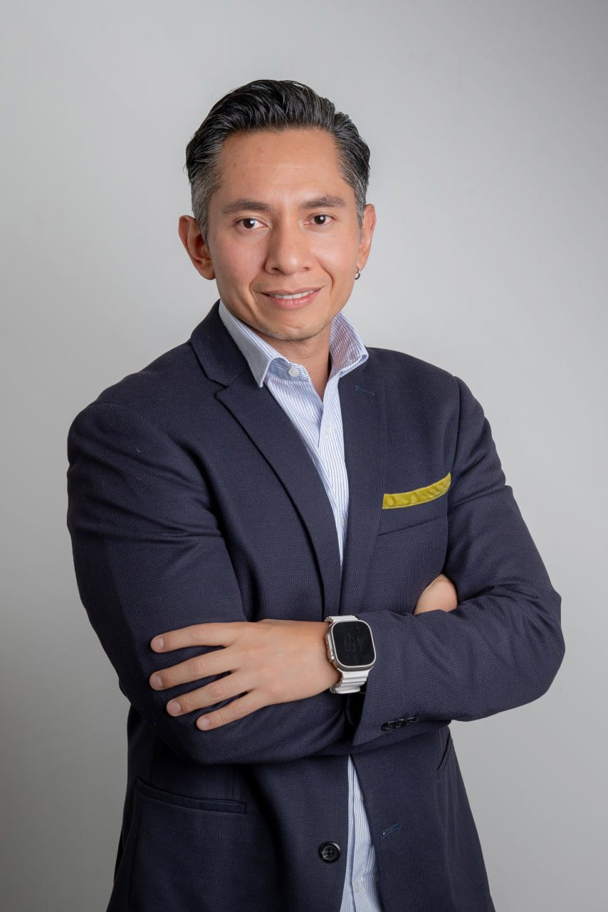

Ocupado no es lo mismo que en control.
Trabajo con directivos, líderes, emprendedores y profesionales en LATAM que trabajan mucho y avanzan poco. Les ayudo a pasar de estar ocupados a estar en control — con un sistema construido en 20 años de operación real.
Para quién
Tu equipo depende de ti para cada decisión. No priorizan, no se comunican con criterio, no ejecutan sin que estés. Todo pasa por tu escritorio.
Creciste rápido pero la operación no siguió el ritmo. Lo que funcionaba con 3 personas no funciona con 15. Necesitas estructura, no más personas.
Trabajas mucho, avanzas poco. El día te come y al final de la semana no sabes bien qué moviste. Quieres operar con criterio, no con urgencia.
Programas
Tu sistema personal de operación desde la semana 1. Plan de acción, seguimiento semanal en Notion, indicadores y asesoría directa. Al terminar: sabes priorizar, delegar y comunicar con criterio.
Para quien quiere un cambio estructural. Rediseñamos cómo lideras, cómo priorizas y cómo comunicas. Acompañamiento profundo con acceso directo y seguimiento real.
Implementación operativa con tu equipo completo. No es un taller. Es construcción real del sistema operativo de tu área — con diagnóstico, diseño, socialización y monitoreo.
Un discovery de 45 minutos donde entiendo tu entorno y te entrego un plan de acción de alto nivel — aunque no sigamos trabajando juntos.
Casos de éxito
No hablo de metodología en abstracto. Aquí están los resultados reales de equipos y profesionales que ya pasaron por el proceso.
Un equipo con energía alta y resultados inconsistentes. En 90 días: sistema de seguimiento activo, canal único de gobernanza, especialización por nicho y cero caídas al cierre.
Leer caso completo21 años de trayectoria, cero reconocimiento, salud al límite. Hoy administra el CRM, maneja objeciones con criterio y opera desde la claridad, no desde la urgencia.
Leer caso completoICP difuso, LinkedIn sin posicionamiento, contenido sin estrategia. Hoy tiene ICP definido, perfil optimizado, pruebas A-B activas y prospectos calificados entrando de forma consistente.
Leer caso completo30 unidades en el primer mes completo, +2,900% vs mes anterior, primera venta en 6 días — con menos de 5 horas semanales y un equipo remoto coordinado con sistema.
Leer caso completoLo que dicen
Con sus consejos he podido elevar la productividad de mi equipo de trabajo e incluso he elevado la facturación en un 30% este año.
Su método está perfectamente organizado para tener grandes resultados en poco tiempo. Ahora soy más productiva invirtiendo menos tiempo en el trabajo.
Su visión promovió la transformación del negocio integrando nuevas tecnologías y ayudando a la organización a adoptar prácticas modernas. Este perfil es raro en la industria.
Sobre mí

Hace 20 años tuve mi primera prueba de fuego. Era mi primer empleo y me llamaron a resolver un proyecto que salía del banco — cumplimiento normativo, exposición directa a la Dirección General. No era el más experimentado en la sala. Era el que tenía que sacar el proyecto.
Algo hice bien. Porque de ahí no paré.
Cinco años después ya tomaba decisiones, lideraba equipos y tenía presupuesto a cargo. En los siguientes 15 años acumulé una trayectoria de posiciones gerenciales y directivas en empresas del sector financiero, real estate, retail, TI, consultoría y gobierno — en algunos casos participando en comités institucionales donde reporté procesos, riesgos, control interno y transformación digital.
He visto las empresas desde la operación y desde la estrategia — y eso me enseñó algo que los consultores de teoría no tienen: sé comunicar hacia arriba y hacia abajo porque he vivido los dos lados.
Hoy colaboro con uno de los grupos empresariales más importantes de México, construyo The CAP Lead — mi metodología de implementación operativa — y gestiono un negocio de e-commerce en EE.UU. Todo en paralelo. Todo con sistema.
Eso es exactamente lo que enseño.
45 minutos de discovery. Sin costo. Te llevas un plan de acción aunque no sigamos.